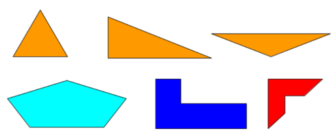
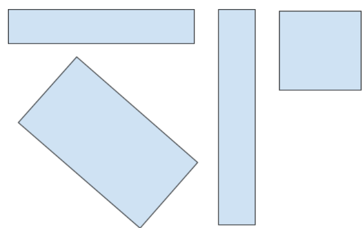
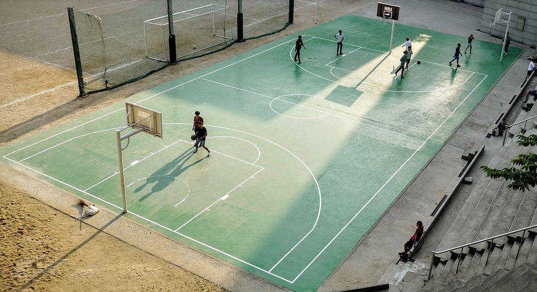
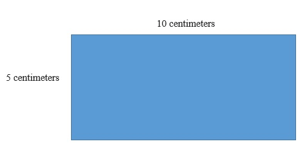
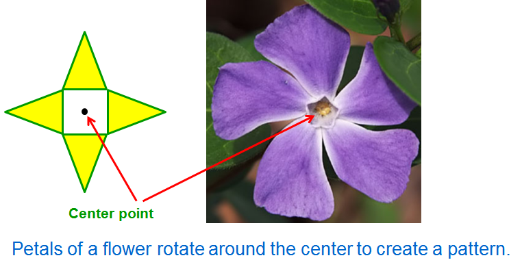
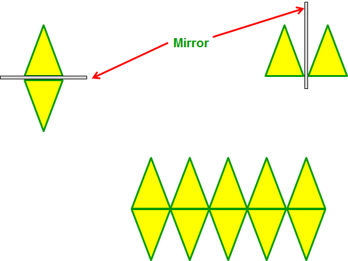

What You Should Know - Wixie: Exploring Polygons and Patterns
Important Vocabulary
- Area - the surface of a two-dimensional shape, measured in square units
- Perimeter - the distance around an object
- Polygon - a shape with straight, connected line segments
- Rectangle - a four-sided polygon with opposite sides the same length and four corners
- Length - how long something is
- Width - how wide something is
Polygons
A polygon is any shape that has straight and connected sides. Here are examples of some polygons.

Rectangles
A rectangle is a polygon. It has four sides and four corners. The opposite sides are the same length. All corners meet at a 90 degree, or right, angle. Here are some examples of rectangles.
Does one of the rectangles look like a square? That’s right! A square is also a rectangle.

Perimeter
The perimeter of a shape is the distance around it. Look at the basketball court. Trace the distance around the court with your finger. This is the perimeter of the court. You can use a measuring tape to measure the length of each side of the court. Then, add up all four sides to find the distance around the court.

This rectangle measures 10 centimeters in length by 5 centimeters in width.

Two sides are missing lengths. You know that the opposite sides of a rectangle have the same lengths. So, two sides measure 10 centimeters and two sides measure 5 centimeters.
To find the perimeter of the rectangle, add: 10 + 5 + 10 + 5 = 30 centimeters. The perimeter of, or distance around, this rectangle is 30 centimeters.
You can make other rectangles with the same perimeter. Another rectangle with a perimeter of 30 centimeters may have side lengths of 4 and 11: 4 + 11 + 4 + 11 = 30. Or, 8 and 7: 8 + 7 + 8 + 7 = 30. There are a lot of rectangles that can be created with a perimeter of 30 centimeters!
Area
The area of a shape is the surface it covers. Look at the rectangle with opposite sides measuring 10 centimeters and 5 centimeters. The rectangle has a length of 10 centimeters and a width of 5 centimeters. The blue shading is the area. Area is measured in square units. To find the area, multiply the two side lengths: 10 × 5 = 50. The area of the blue rectangle is 50 square centimeters.
Reflection and Rotation
Reflection is flipping an object across a line without changing its size or shape. It is like using a mirror to copy an object. Rotation is rotating an object about a fixed point without changing its size or shape. You can use these movements of a shape to create patterns. One way to make a pattern is to rotate a copy of the shape or image. This means it spins around one point.


Another way to create a pattern is to reflect a copy of the shape or image. This means it flips over an imaginary line. It is like using a mirror to copy an object.
Exploring Patterns
Take a look at these images. What makes them similar and what makes them different?
- Patterns repeat shapes and colors.
- Patterns can be numbers, images, or shapes.
- In music, sounds also repeat to make patterns. These could be called musical themes.
- Some patterns have symmetry. Symmetry is when one side is the mirror-image of the other side.
Career Connection and Real-World Application
Measurement in Careers
All building and construction careers use measurement. Before starting a building, architects are responsible for designing the layout of a building. They plan how long and wide the base of the building will be and share that information with builders who are responsible for building the walls and laying the flooring.

Landscapers and gardeners utilize measurements too. They may install a fence around a space or lay material such as a lawn or mulch. They need to know how much area the ground covers to calculate the amount of soil, fertilizer, or mulch. Or, they may design and install a nice walkway. They need to measure the space to know the perimeter and area of their projects.
You can see patterns all around you. Some occur in nature, like the sunflower. Some are man made, like the fire escapes or art.